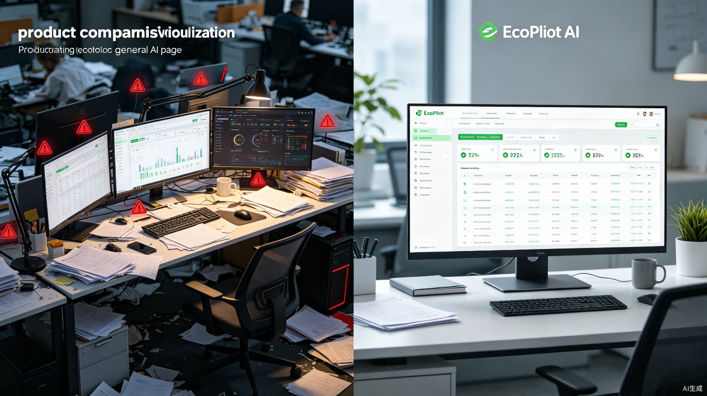

WHY ECOSYSTEM
和别的工具不一样在哪
不只是 AI 助手，是懂法规、敢拒绝、有来源的合规管家
| 维度 | 通用 AI | EcoPilot |
|---|---|---|
| 回答来源 | 可能编造 | 法规条款 + 标准编号 + 平台真实数据 |
| 数据获取 | 你手动输入 | 自动读取政务平台 + 台账自动汇总 |
| 合规态度 | 你说什么它顺着你 | 不合规时明确拒绝 + 给出法律依据 |
| 督察整改 | 无 | 三类型工单 + AI 四维审查 + 动态升级 |
| 日历管理 | 无 | 月历+时间轴双视图 + 自然语言建日程 |
| 模型能力 | 单一文本 | 文本+视觉双引擎 + 语音输入 |
| 运维 | 你自己搞定 | 团队远程监控 + 即时修复 |
| 授权 | 账号密码 | 机器绑定，换电脑不能用 |

左边：多个系统来回切，焦头烂额。右边：一个 EcoPilot 搞定一切。
KEY DIFFERENTIATORS
三个别的 AI 做不到的事
1
法规条款精准引用
不说"相关法规"，说"《排污许可管理条例》第21条第1款"。每一条建议精准到条款编号和具体指标，经得起督察推敲。
2
不合规时敢于拒绝
不会为了让你"满意"而糊弄你，因为糊弄的代价是几十万的罚款。拒绝时给出法律依据和修正建议，帮你真正解决问题。
3
每一个结论都有来源
没有来源、没有条款编号的结论，一句都不会说。所有结论基于法规原文、国家标准或政务平台真实数据生成。